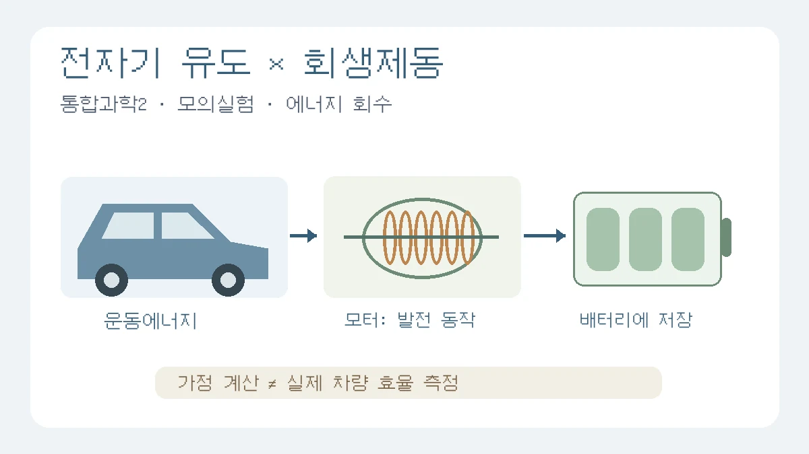

전자기 유도 심화탐구, 회생제동 괜찮을까? 통합과학2 보고서 설계
회전 속도와 감속도를 구분하고, 계산한 에너지와 실제 회수 효율을 혼동하지 않기
목차
- 회생제동 탐구 질문
- 패러데이·렌츠 법칙
- 모의실험과 에너지 계산
- 저속·배터리·손실 한계
- 무선 충전·와전류 제동
- 다른 물리 확장 주제
- 한글 보고서 구성
- 안전과 출처 점검
핵심 요약
- 감속도와 자기선속 변화율을 바로 같게 놓지 않기
- 가정한 회수 에너지와 실제 차량 효율 구분
- 실제 차량 조작 대신 모의실험·계산·공식 자료 활용

통합과학2에서 전자기 유도를 배운 뒤 실생활의 심화 주제로 확장하려면 회생제동은 검토할 만한 선택입니다. 다만 “모터가 발전기로 바뀌어 배터리를 충전한다”는 설명만으로 끝내면 질문에 답하는 탐구보다는 장치 소개에 가까워집니다. 무엇이 전압을 바꾸고, 회수할 에너지는 얼마나 되며, 어떤 조건에서 회수가 제한되는가 중 하나를 정해 보세요.
이 글은 고1 수준의 개념 확인에서 출발해 회생제동의 단순 계산 모델, 다른 전자기 유도 주제, 한글 보고서 구성까지 안내합니다. 단원명과 학습 범위는 사용하는 교과서와 교사의 과제 안내를 먼저 확인해야 합니다. 아래 미분식과 공진·초전도 개념은 추가 학습이며, 모두 수행해야 하는 필수 조건이 아닙니다. 평가 등급이나 입시 결과도 보장하지 않습니다.
1. 회생제동을 ‘장치 설명’에서 탐구 질문으로 바꾸기
회생제동은 차량이 감속할 때 구동 모터를 발전 동작에 활용해 운동에너지의 일부를 전기에너지로 회수하는 방식입니다. 실제 시스템에는 전력변환 장치, 배터리, 제어와 마찰제동이 함께 관여합니다. 모터 그림 하나로 차량 전체를 설명하려 하기보다 다음 중 하나를 선택하세요.
- 개념 중심: 다른 조건이 같을 때 코일의 회전 속도가 유도기전력의 크기에 어떤 영향을 주는가?
- 계산 중심: 같은 질량과 가정한 회수 비율에서 감속 전후 속도에 따라 회수 에너지가 어떻게 달라지는가?
- 자료 비교 중심: 제조사 설명서에서 배터리 온도·충전 상태에 따른 회생제동 제한을 어떻게 설명하는가?
처음 쓰는 보고서라면 두 번째를 주 질문으로, 첫 번째를 이론적 배경으로 삼는 구성이 가능합니다. 모의실험, 계산, 문헌 비교를 모두 섞어 실제 차량 성능을 입증한 것처럼 쓰지는 마세요.
2. 패러데이·렌츠의 법칙: 감속도와 회전 속도를 혼동하지 않기
코일 한 바퀴를 통과하는 자기선속을 Φ, 감은 수를 N이라 하면 평균 유도기전력은 ε̄ = −N·ΔΦ/Δt로 표현할 수 있습니다. 순간값을 다룰 때는 ε = −N·dΦ/dt를 사용합니다. 마이너스 부호는 유도 전류가 자기선속의 변화를 방해하는 방향으로 생긴다는 렌츠의 법칙과 연결됩니다. 자기장이 있다는 것만으로 계속 전압이 생기는 것은 아닙니다.
균일한 자기장 B에서 면적 A인 코일을 일정한 각속도 ω로 회전시키는 이상화된 발전기에서는 Φ = BA cos(ωt), ε = NBAω sin(ωt), 최대 기전력 ε₀ = NBAω가 됩니다. OpenStax의 발전기 설명에서 이 조건과 유도 과정을 확인할 수 있습니다. 이 식은 교재의 단순 코일 모형이지 모든 전기차 모터를 그대로 나타내는 식은 아닙니다.
따라서 차량의 감속도 dv/dt를 자기선속 변화율 dΦ/dt와 바로 같게 놓아서는 안 됩니다. 감속하지 않고 일정한 속도로 회전하는 코일에도 자기선속 변화와 유도기전력이 생길 수 있습니다. 차량 속도를 모터 회전 속도로 바꾸려면 바퀴 반지름, 감속기 비율 등도 정의해야 합니다. 먼저 코일의 회전 속도와 차량의 감속도를 다른 변수로 적어 두세요.
3. PhET는 개념 확인에, 스프레드시트는 에너지 계산에
PhET ‘Faraday’s Law’와 ‘Faraday’s Electromagnetic Lab’은 전자기 유도 현상을 살펴보는 교육용 도구입니다. 선택한 화면에서 자석·코일의 상대 운동, 코일 수 등 실제로 조절할 수 있는 항목을 확인하고 한 번에 하나만 바꾸세요. 전압계 바늘의 방향이나 크기 변화는 기록할 수 있지만, 화면에 눈금과 단위가 제공되지 않는다면 정확한 전압 수치를 측정했다고 쓰면 안 됩니다. 어느 도구도 그 자체로 실제 차량의 회수 효율을 측정하지는 않습니다.
계산 탐구에서는 차량의 병진 운동에너지만 고려하는 단순 모델을 사용할 수 있습니다. 질량 m, 감속 전 속도 v₁, 감속 후 속도 v₂에 대해 ΔK = ½m(v₁² − v₂²), 가정한 총 회수 비율 η에 대해 Erec = ηΔK로 놓습니다. 속도 단위는 m/s이며 v₁ ≥ v₂ ≥ 0으로 정합니다. η는 운동에너지 감소량 중 배터리에 저장되는 몫을 단순하게 가정한 값입니다.
계산 연습용 가정
m = 1,000 kg, v₁ = 20 m/s, v₂ = 10 m/s, η = 0.60이라면 ΔK = 150,000 J, Erec = 90,000 J = 0.025 kWh입니다. 질량과 회수 비율은 실제 차종의 측정값이 아니며, 60%를 모든 차량의 효율로 제시해서는 안 됩니다.
스프레드시트에서는 정지까지 감속하는 경우를 비교할 수 있습니다. A열에 가정한 초기 속도 0, 5, 10, 15, 20 m/s를 적고, B2에 =0.5*1000*A2^2, C2에 =0.6*B2, D2에 =C2/3600000을 입력해 아래로 복사합니다. 각각 운동에너지(J), 가정한 회수 에너지(J), 회수 에너지(kWh)입니다. A열과 D열로 그래프를 그리세요.
이 그래프는 속도별 회수 가능한 에너지의 가정 모델입니다. η를 고정했으므로 속도별 실제 효율을 알아낸 그래프가 아닙니다. η를 0.30·0.60·0.80으로 바꿔 비교하면 가정에 결과가 얼마나 민감한지 살펴볼 수 있지만, 그것 역시 실제 차량 효율의 측정은 아닙니다.
4. 저속·배터리·손실: 결론에 남겨야 할 한계
같은 질량에서는 남아 있는 운동에너지가 속도의 제곱에 비례하므로 저속 구간에서 더 회수할 에너지는 작아집니다. 단순 발전기 모형에서는 회전 속도가 낮아질수록 최대 기전력도 작아집니다. 그러나 이를 근거로 “모든 전기차는 회생제동으로 절대 정지할 수 없다”고 단정하면 안 됩니다. 저속 제어와 정차 유지, 마찰제동의 병행 방식은 차종·전력변환 장치·제어 설계에 따라 달라집니다.
배터리가 회수 전력을 받아들일 수 있는지도 중요합니다. 예를 들어 Tesla Model S의 제동 안내는 배터리가 차갑거나 이미 완전히 충전된 경우 회생제동이 제한될 수 있다고 설명합니다. 특정 차종의 안내를 다른 차량에 그대로 적용하지 말고, 조사한 모델과 설명서의 확인 날짜를 기록하세요.
단순 에너지 모델은 공기저항, 구름저항, 바퀴·모터의 회전 운동에너지, 모터·인버터·배터리의 손실과 충전 전력 제한을 별도로 계산하지 않습니다. 코일 저항에 의한 발열이나 철심의 와전류·히스테리시스 손실은 실제 장치에서 검토할 항목이지만, 측정하지 않았다면 각각의 손실량을 임의로 배분하지 마세요. ‘측정 오차’와 ‘모델에서 제외한 조건’도 구분해야 합니다.
수정 전
감속도가 클수록 전압과 효율이 높아지고 모든 운동에너지가 배터리로 돌아간다.수정 후
코일의 회전 속도와 유도기전력의 관계를 개념 모형에서 확인하고, 일정한 회수 비율을 가정해 감속 전후 운동에너지 차이를 계산했다. 실제 회수량은 배터리 상태와 제어·손실 조건에 따라 달라지므로 계산값을 차량 성능의 측정 결과로 해석할 수 없다.
5. 다른 전자기 유도 심화 주제: 무선 충전과 와전류 제동
무선 전력 전송: 코일 거리나 정렬 중 하나만 바꾸기
교류에 의해 변하는 자기장이 수신 코일에 유도기전력을 만드는 원리에서 출발할 수 있습니다. 자기유도 방식과 공진을 이용하는 방식을 비교할 때는 ‘유도는 무조건 단거리·고효율, 공진은 무조건 중거리’라는 등급표보다 코일 구조, 주파수, 부하와 결합 조건을 살펴야 합니다.
학교에서 승인한 저전압 교육용 장치가 있다면 코일 거리만 바꾸고 입력·출력 전력을 비교하는 질문을 세울 수 있습니다. 다른 조건은 일정하게 유지하고 효율은 Pout/Pin으로 정의합니다. 출력 전압만 측정해서 효율이라고 부르지 마세요. 적절한 전력 계측기가 없다면 공개 실험 자료를 비교하는 방식으로 범위를 바꿉니다. 공진 회로 제작이나 전기차 충전 장치의 분해는 이 활동에 필요하지 않습니다.
도체관 속 자석 낙하: 에너지가 배터리로 가는가, 열로 가는가?
자석이 도체관을 통과할 때 자기선속 변화가 도체에 와전류를 만들고, 그 효과가 운동을 방해하는 방향으로 나타나는 현상을 탐구할 수 있습니다. OpenStax의 와전류·자기 감쇠 설명을 참고하세요. 회생제동과 달리 이 단순 모형에는 배터리에 전기를 저장하는 경로가 없으며, 운동에너지의 일부는 도체의 열로 전환됩니다.
작은 자석과 같은 길이·내경의 관을 준비할 수 있다면 자석의 낙하 시간부터 비교하세요. 재질·두께·내경을 동시에 바꾸면 어떤 조건의 영향인지 분리하기 어렵습니다. 각 조건을 반복하고 영상 촬영으로 시작·끝 기준을 맞춥니다. 짧은 관의 전체 낙하 시간만으로 ‘종단속도를 측정했다’고 쓰지 말고, 구간별 속도가 거의 일정해졌는지 확인해야 합니다. 자석의 회전·관 벽 접촉·출발 위치 차이도 기록할 한계입니다.
6. 전자기 유도 밖의 물리 확장 주제는 선수 개념부터 확인하기
아래 세 주제를 통합과학2의 공통 필수 내용으로 묶어서는 안 됩니다. 사용 교과서의 단원과 과제 범위에 맞는 출발 개념이 있는지 교사와 확인한 뒤 하나를 선택하세요.
- 초전도체의 마이스너 효과와 자속 고정: 저항이 매우 작다는 설명과 자기장 배출, 특정 조건의 자속 고정을 구분하는 문헌 비교가 가능합니다. 두 현상을 같은 뜻으로 쓰지 마세요. 직접 저온 실험 대신 교육기관의 시연 자료를 비교하는 편이 적합하며, 액체질소·강한 자석을 이용한 자작 실험은 권하지 않습니다.
- 압전 소자의 에너지 하베스팅: 압전 효과는 전자기 유도와 다른 에너지 변환 원리입니다. 승인된 키트가 있다면 같은 부하에서 변형 조건에 따른 출력 변화부터 살펴보세요. 무부하 전압만으로 전력이나 효율을 계산할 수 없고, 효율을 다루려면 투입한 기계적 에너지의 측정도 필요합니다.
- 크럼플 존과 충격량: 운동량·충격량을 추가로 학습했다면 F평균Δt = mΔv를 이용해 같은 운동량 변화에서 충돌 시간이 평균 힘에 미치는 영향을 비교할 수 있습니다. 평균 힘과 최대 힘을 구분하고, 단순 계산이 실제 충돌 안전성을 입증하는 것은 아님을 적으세요. 실제 차량 충돌 대신 계산 또는 교사가 승인한 작은 모형을 사용합니다.
7. 한글 보고서에 옮길 네 항목과 작성 예시
이 글은 한글에 옮겨 쓸 수 있는 구성 안내이며 완성된 학생 수행 결과가 아닙니다. .hwp 또는 .hwpx 형식, 분량과 제출 방법은 과제 안내에 따르세요.
- 탐구 배경과 목적: 교과서의 실제 단원·쪽, 배운 개념, 한 가지 질문을 기록합니다.
- 이론과 변수 정의: Φ·N·ε·ω 또는 m·v·η 중 실제 사용한 변수의 뜻·단위·가정을 설명합니다.
- 방법·결과·한계: 모의실험 조건이나 계산식, 직접 만든 표·그래프, 출처, 측정하지 못한 조건을 구분합니다.
- 결론과 후속 질문: 질문에 답할 수 있는 범위와 추가로 확인할 변수를 적습니다. 미수행 후속 활동을 완료한 것처럼 쓰지 않습니다.
계획 단계의 서론 예시
전자기 유도를 학습하며 발전 작용이 감속 상황에서도 활용될 수 있다는 점에 관심을 가졌다. 이번 탐구에서는 일정한 질량과 회수 비율을 가정하고, 감속 전후 속도가 회수 가능한 에너지에 미치는 영향을 계산하고자 한다. 실제 차량의 효율 측정이나 배터리 제어 실험은 수행하지 않으며, 모형의 한계는 제조사 설명서와 비교해 정리할 계획이다.
결론은 실제 활동이 끝난 뒤 고치세요. ‘다음에는 미분방정식을 풀겠다’는 큰 예고보다 “이번에는 η를 고정했으므로, 후속 탐구에서는 회전 속도별 전압·전류 자료로 조건에 따른 회수량 차이를 확인하고자 한다”처럼 남긴 한계와 연결되는 질문이 구체적입니다.
8. 안전·출처·제출 전 점검
실제 차량의 제동계나 고전압 배터리를 조작하거나 공도에서 제동 시험을 하지 않습니다. 실물 활동은 교사가 승인한 작은 저전압 장치로 제한하고, 자석의 손 끼임·낙하 충격과 관의 날카로운 모서리에 주의하세요. 자석이나 실험 장치를 사람의 몸에 대거나 전자기기에 가까이 두지 않습니다.
교과서의 저자·판·단원·쪽, 모의실험 이름과 버전·접속일, 공식 설명서의 차종·지역·접속일을 기록하세요. 위에 연결한 OpenStax, PhET, 제조사 설명서는 개념과 조건을 확인하는 자료이며 입시 평가 기준이 아닙니다. 제출 전에는 ‘가정값·모의실험 관찰·실제 측정·문헌 설명’이 문장과 그래프에서 구별되는지 확인하면 됩니다.
보고서 전체 구성은 대표 작성 가이드, 결과의 한계는 과학 오차·한계 작성법과 함께 참고할 수 있습니다.
관련 글
탐구보고서 처음 쓰는 법: 질문·자료·분석·결론을 연결하는 실전 예시NEW
가상 공지 네 개를 비교하며 관찰과 해석, 결론의 한계를 구분하고 보고서 한 편으로 묶습니다.
과학 과목 탐구보고서에서 오차와 한계 쓰는 법NEW
과학 보고서의 오차와 한계는 실패 고백이 아니라 탐구의 신뢰도를 높이는 설명입니다.
공통수학2 샤를 법칙 탐구보고서: 직선의 방정식과 기체 모델의 한계NEW
일정 압력·일정 기체 양에서 온도와 부피를 직선으로 표현하고 기울기·절편, 절대온도 변환, 실측과 모델의 한계를 구분하는 보고서 가이드입니다.
이 글은 일반 교육 정보이며 특정 대학 합격·학생부 평가·면접 결과를 보장하지 않습니다. 학교와 대학의 공식 안내를 함께 확인해 주세요.